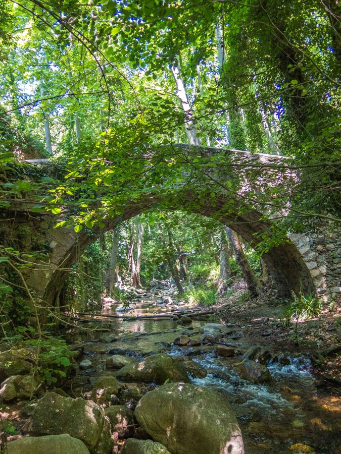

Ruta · Gualba
Et proposem una ruta plena de misteri i natura al cor de Gualba , on cada parada amaga enigmes , proves i petites descobertes inspirades en les antigues llegendes del Montseny . A mesura que…